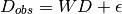
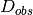
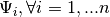
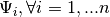

REEFFIT package documentation¶
REEFFIT (RNA Ensemble Extraction From Footprinting Instights Tool) is a method to fit RNA secondary structure ensembles to multi-dimensional chemical mapping data. Currently, the method can take data from one and multiple mutate-and-map or mutate-bind-and-map (mutate-and-map plus ligand titrations, e.g. for riboswitches) experiments. Output is a set of weights and expected reactivities for each structure that linearly combine to form the data. If the structural ensemble is not provided, REEFFIT uses RNAstructure to generate a suboptimal set of structures of all mutants.
Contents:
Indices and tables¶
Technical summary¶
REEFFITs core framework is essentially non-negative factorization with a Gaussian error model (i.e. a form of factor analysis). In this framework, the data is modeled as a linear combination of positive hidden variables:

Where  is the data,  are the weights and
are the weights and  are the hidden variables;
are the hidden variables;  is a noise term that has mean 0 and position-wise variance values . In standard factor analysis, the hidden variables are normally distributed, and the likelihood function to obtain the weights and the noise covariance matrix is maximized using the EM algorithm. Fortunately, when the covariance matrix is assumed diagonal (that is, the measured variables are not well correlated), then the E and M steps of the EM algorithm can be written in closed form. However, we have a different, more complicated prior on the hidden variables , since in our case these variables are the chemical reactivities for a given structure that are expected to be drawn from a chemical reactivity distribution shaped by the structure. To simplify things, we use chemical reactivity distributions obtained from the RMDB database (http://rmdb.stanford.edu) splitted into two classes: distributions for unpaired and paired nucleotides. Because these priors on are far from normal, we cannot use the standard factor analysis EM-algorithm solutions; in fact, the likelihood function derived from the E-step cannot be calculated analytically. Instead, we either use Bayesian inference (Markov Chain Monte Carlo simulations) or maximum a posteriori estimation to solve the optimization problem. The M-step is much simpler, as it can be solved as a quadratic optimization problem with convex constraints (the weights need to be positive and sum to one). For error estimation, we use bootstrapping, although REEFFIT is able to calculate stnadard errors withouth bootstrapping as well.
is a noise term that has mean 0 and position-wise variance values . In standard factor analysis, the hidden variables are normally distributed, and the likelihood function to obtain the weights and the noise covariance matrix is maximized using the EM algorithm. Fortunately, when the covariance matrix is assumed diagonal (that is, the measured variables are not well correlated), then the E and M steps of the EM algorithm can be written in closed form. However, we have a different, more complicated prior on the hidden variables , since in our case these variables are the chemical reactivities for a given structure that are expected to be drawn from a chemical reactivity distribution shaped by the structure. To simplify things, we use chemical reactivity distributions obtained from the RMDB database (http://rmdb.stanford.edu) splitted into two classes: distributions for unpaired and paired nucleotides. Because these priors on are far from normal, we cannot use the standard factor analysis EM-algorithm solutions; in fact, the likelihood function derived from the E-step cannot be calculated analytically. Instead, we either use Bayesian inference (Markov Chain Monte Carlo simulations) or maximum a posteriori estimation to solve the optimization problem. The M-step is much simpler, as it can be solved as a quadratic optimization problem with convex constraints (the weights need to be positive and sum to one). For error estimation, we use bootstrapping, although REEFFIT is able to calculate stnadard errors withouth bootstrapping as well.
Contact¶
If you have any questions please contact us:
- Pablo Cordero: tsuname at stanford dot edu
- Rhiju Das: rhiju at stanford dot edu
License¶
This project is licensed under the GNU Public Licence.